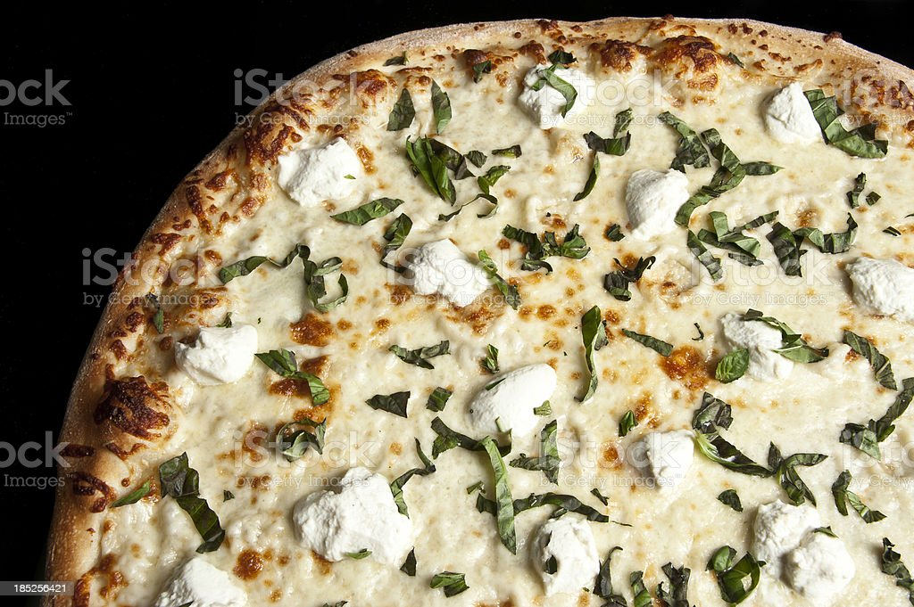

Gourmet White Pizza

Description
This is not at all like the white pizza I am familiar with, but I'm glad we tried it. We really liked this pizza - the sauce and chicken go really well together. I think we will use that sauce on other things too. We put some mozzerella cheese on top and it came out well. Next time, I'll make a couple of changes. First, it was a little too saucy. We ate it with fork and knife, although the sauce was very good. Maybe I should have gotten a large pizza crust instead of the medium. Also, we will bake this directly on the rack instead of using a pizza stone so the middle gets crispier. Note - We used Biboli pizza crust.
Ingredients
- 2 tablespoons butter, melted
- 1 tablespoon olive oil
- 3 tablespoons minced garlic
- 2 tablespoons sun-dried tomato pesto
- 1 teaspoon dried basil
- 1 teaspoon dried oregano
- 1 tablespoon grated Parmesan cheese
- 1 cup Alfredo sauce
- 2 cups chopped cooked chicken breast meat
- 1 (12 inch) pre-baked pizza crust
- 1 medium tomato, sliced
- 1 (4 ounce) package feta cheese
Steps
- Preheat the oven to 375 degrees F (190 degrees C).
- In a small bowl, mix together the butter, olive oil, garlic, pesto, basil, oregano, Parmesan cheese and Alfredo sauce. Arrange the chicken on top of the pizza crust. Pour the Alfredo sauce mixture evenly over the chicken. Top with tomato and feta cheese.
- Bake for 10 to 15 minutes in the preheated oven, until the crust is lightly browned and toppings are toasted. Cut into wedges to serve.